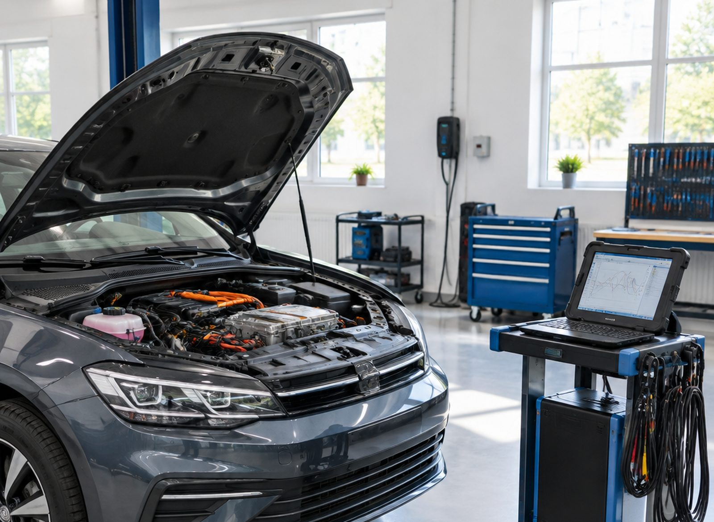
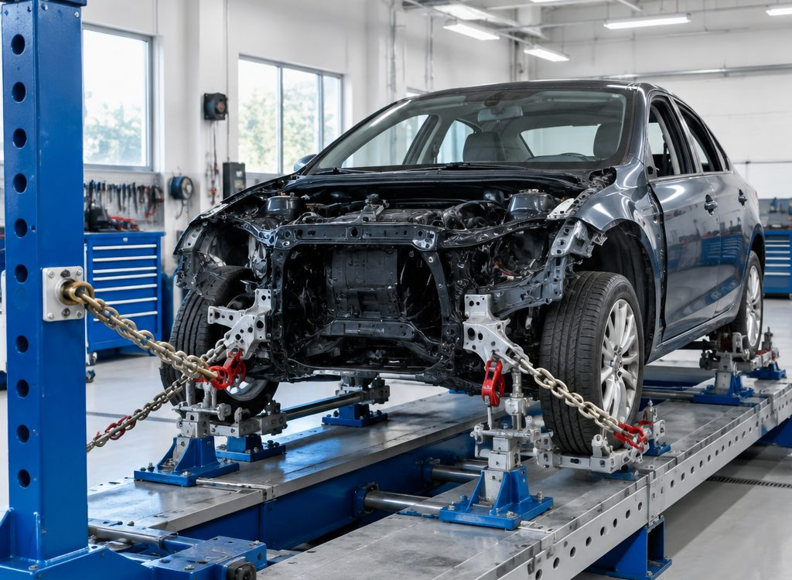

Геометрия кузова: сначала размеры, потом покраска
Если после удара повело кузов, красить рано. Сначала контрольные точки и вытяжка на стапеле, потом сборка и покраска.
Почему без стапеля не получается
Кузов — это каркас с заводскими размерами. Если их не вернуть, двери и подвеска будут работать неправильно, сколько бы шпаклёвки ни положили.
Замер по контрольным точкам
Сверяем диагонали и базовые размеры с заводскими. Видно, что именно повело и насколько.
Фиксация и вытяжка
Кузов крепится за силовые элементы, усилие прикладывается в нужном направлении и дозированно.
Проверка проёмов
После вытяжки проверяем зазоры и работу дверей, капота, крышки багажника.
Только потом кузовные работы
Когда геометрия в норме, можно выправлять панели, шпаклевать и красить.

Когда пора на замер
Пять признаков, при которых стоит проверить геометрию, даже если внешне машина выглядит целой.
Двери закрываются с усилием
Зазоры по контуру разной ширины, дверь цепляет стойку.
Машину тянет в сторону
После удара появился увод, неравномерно изнашиваются шины.
Капот или багажник встал криво
Проём перекошен, замок не совпадает с ответной частью.
Ремонт уже делали
Кузов тянули без замера точек — проверяем, что получилось.
Удар в колесо или порог
Задета силовая часть: без замера не понять масштаб.
Пришлите фото повреждения
По фото сориентируем, нужен ли стапель или достаточно кузовного ремонта.